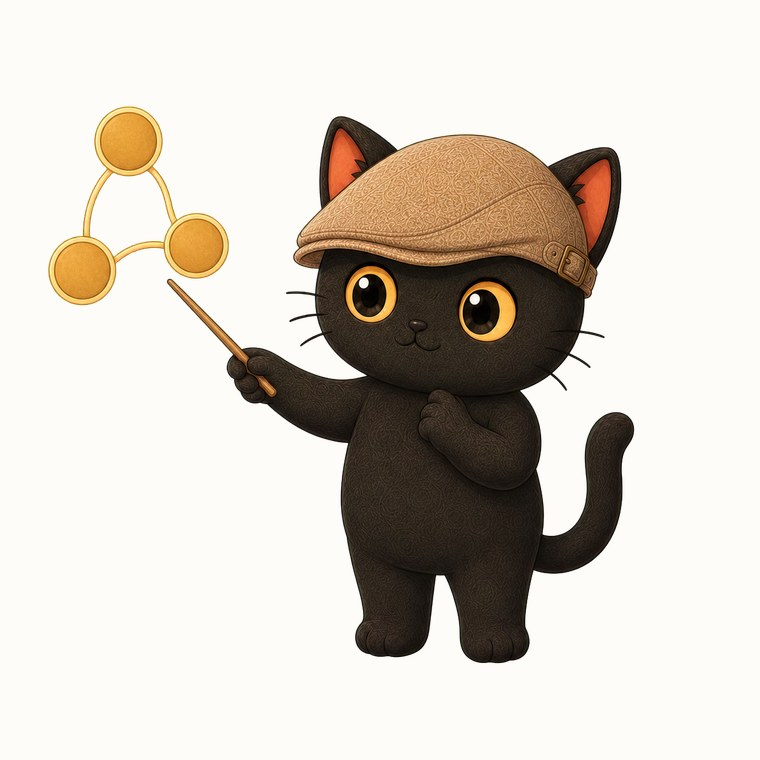
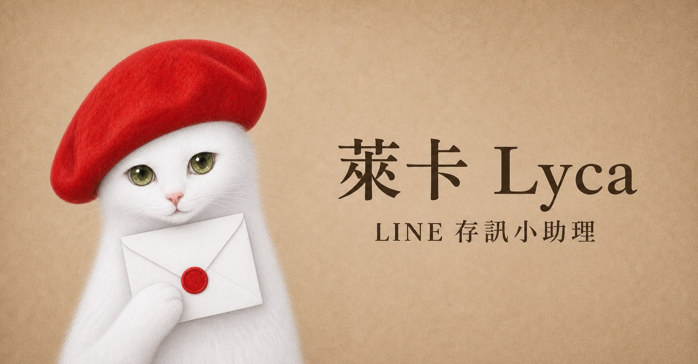

I originally had only one AI Assistant named Mika. She was featured on the website, classroom, and social media cards. Later, this same AI Assistant was used in the LINE group. This resulted in an issue related to product expectations.
The same name and face appearing in different entry points naturally led users to apply their original understanding and expect the same capabilities. However, the LINE group has its own environment limitations and permissions, and the things that can be done are inherently different from the website. Therefore, each time I interacted, I had to explain again which functions were available and which were not.
Later, I made a product decision: to split the role in the LINE group and call it Lyca.
- Currently designing an AI Assistant, chatbot, or digital character, but found that capabilities differ across platforms
- When the same service is placed in different platforms, need to constantly explain differences to users
- Already has a character image, wants to organize it into a reusable product role
- A set of three questions to judge whether to continue using the same role or to split it out
- A thinking sequence that connects usage context, capability boundaries, and role identification
- A method that returns the explanatory work to the interface
The same role brings the same capability expectations
Mika is a black cat wearing a flat hat, with a relatively short and round body. People who see me interacting with Mika on the official website or in class, and then see the same name in the LINE group, easily carry over their previous usage experience.

However, that environment has its own limitations. If I need to explain the difference in permissions every time before interaction, it means the product boundary is still within my explanation, and users cannot recognize it from the interface itself.
In the end, I chose to split Mika into Lyca. Lyca retains the cat's lineage, but with a different name, fur color, body shape, and fixed accessories. When users see Lyca, they will first realize they have entered a different interactive context.
This is a product design issue, not an art issue.
Once a character is placed in a product, it participates in users' understanding of the functionality.
When the same character appears repeatedly, people accumulate a set of understanding about it: what it is called, what it can help with, and how to talk to it. When the product environment changes and the capabilities also change, the previously accumulated understanding becomes a wrong expectation.
This time, I chose to directly adjust the character structure instead of adding more explanatory text. Mika maintains its original character recognition, while Lyca takes on the specific environment of the LINE group. The character name and visual design therefore become part of the product interface, helping to convey the capability boundaries.
I used three questions to decide whether to split.
Changing the character for each entry will also increase the user's memory cost and my own maintenance cost. Therefore, whether to split should have a criterion. My order of priority is these three questions:
- Are the capabilities and permissions of the two environments significantly different?
- Will users directly carry over their previous interaction methods?
- Do I need to repeatedly explain the same set of limitations?
When the differences are small, using the same character and adding a mode name or interface prompt is sufficient. When the differences continue to cause wrong expectations, splitting into a new character is clearer. Lyca follows the second path.
First define the product character, then start drawing the character.
The initial direction for Lyca was still a black cat, trying several accessories to express 'coordination in a group and message transmission'. However, the character is still a black cat, with a body shape close to Mika, so the distinction between the two is not clear enough.
Therefore, I first narrowed down the character definition: Mika is a black cat, Lyca is a white cat; Mika is short and round, Lyca is tall and slender; Lyca has a high and cold aura, holding a letter; Lyca is responsible for the role recognition of the LINE group.
These were first determined, and then the design of the subsequent appearance had a basis for judgment. Each proposal only needed to answer two things: can users immediately recognize Lyca, and can Lyca clearly differentiate its role from Mika.

Appearance is not just about looking good; it conveys boundaries.
The process of exploring the appearance is actually revealing the product decisions. Every time I change an accessory, I ask myself, 'Is this enough to make it immediately recognizable?' Whether it looks good comes later.
In the end, Lyca was fixed with a red beret and a white envelope. The red hat makes it clearly distinguishable from the black Mika, and the envelope retains the role's line of information transmission. At this point, Lyca had a set of fixed elements that could be repeatedly described, recognized, and produced.
Once a role has fixed elements, subsequent tasks such as stickers, website illustrations, or social media cards do not require re-inventing each time. This is the same as product design, where the main component specifications are fixed first, and then extended to other scenarios.
Rather than explaining continuously, let the interface speak for itself.
The development of Lyca began due to a mismatch between LINE group capabilities and user expectations. This was separate from any desire I had to raise another cat.
The role's name and appearance first make this boundary visible. Following that, subsequent visual specifications organize it into a system for continuous use. The actual outcome of this entire process is transferring the 'explanation' task from myself to the product itself; it is not about creating a new role.
Rather than expecting everyone to understand the variables in different environments, it's better for me to directly design a new role.
Use AI as a tool to help you accumulate judgment
I host two free online lectures every month, with topics alternating on how to organize workflows, judgments, and experience into prompts, skill packages, and knowledge bases that AI can flexibly use. If you want to receive course notifications or discuss how your product should be defined, feel free to start from the community.
Free lecture sessions will be announced here first, and you can also bring your current product to think about together.
Join the community ↗